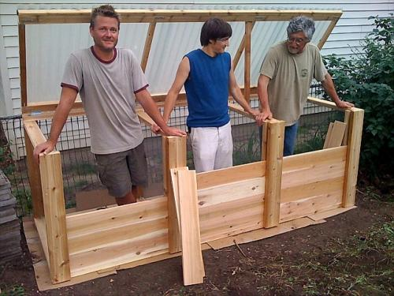

Navigation

User login
Field Glossary

English-Spanish Dictionary for Sustainable Agriculture
Types of Compost Bins
Many different models for compost systems exist. We recommend having at least two 3'x3' bins, which allows for one batch of compost to finish curing while a new batch is being built.
Features to look for include:
- venting and air-flow into the bin (mesh or vented sides)
- cover from rain and snow
- durability (cedar or other weather-resistant wood)
- moving parts (the fewer moving parts, the less there is to break)
- ease of access for turning (especially if doing hot compost) and harvest
Questions you may ask yourself to help select a model are:
Am I trying to cook batches of hot compost? Or am I content to let my compost rot slowly? If it is the latter, you may be well-served with a simple mesh bin or just a simple pile in an out-of-the-way area.
- To what extent am I trying to keep pests out of my food scraps? If you don't mind having squirrels and mice drag half-rotten pears around the yard, you may be able to get away with
- How much space do I have? Enclosed compost bins save space because they allow the pile to be stacked nice and high, often right up next to a walkway.
- How tidy do I want my space to look? Enclosed compost bins lend a neat appearance to a landscape. However, a well-kept pile under the shade and drip edge of a Spruce tree may provide the neatness you want.
- How much money/time do I want to spend acquiring a compost bin? If you are to make an investment, what kind of investment are you ready to make?* Do you have carpentry skills? Are you able to barter for them?
Moreno Farms uses a 3-bin wood-and-wire model (seen above), fashioned after a model developed by Pierce County, Washington State. This link will take you to a PDF plan, but if you are going to build this bin, call the number listed on the site to requested revised plans, which had not been posted. Pierce Co. also provides free, quality plans for a 1-chamber portable wood-and-wire bin, simple mesh bins, and a family-size wooden worm-compost bin (Please see our Vermiculture section for commentary on adaptations of this worm bin to a cold climate). Understory and our Associates are experienced in constructing attractive wood-and-wire bins for our clients. Contact us for more info.
Typical black-plastic compost bins run about $100, although they are often subsidized by initiatives from cities and counties who buy them in large lots and re-sell them to citizens. We endorse the round, Smith&Hawken model which easily comes apart for harvest of the finished compost. The tall tower-style black plastic models can be difficult to access. Drawbacks of plastic include susceptibility to chomping by varmints (bins have been observed with big bite-holes) and the fact that they are made from plastic, which sucks.
Drum-style Compost bins are able to make compost in as few as 14 days. Drawbacks are that they have moving parts exposed to the elements, are often expensive (upwards of $300), and cannot hold a lot of material at once.
*Soil fertility and the soil life which make it possible are currently
not well-valued in our culture. Most of our food is grown on land awash
in chemicals which kill or overfeed the soil microherds that are the
foundation of our long-term fertility and food security. An investment in a compost system is also an investment in reclaiming the knowledge and skills that will allow us and future generations to sustain ourselves in the landscape. Manure may once again come to enjoy a high value in our society.
- Login to post comments